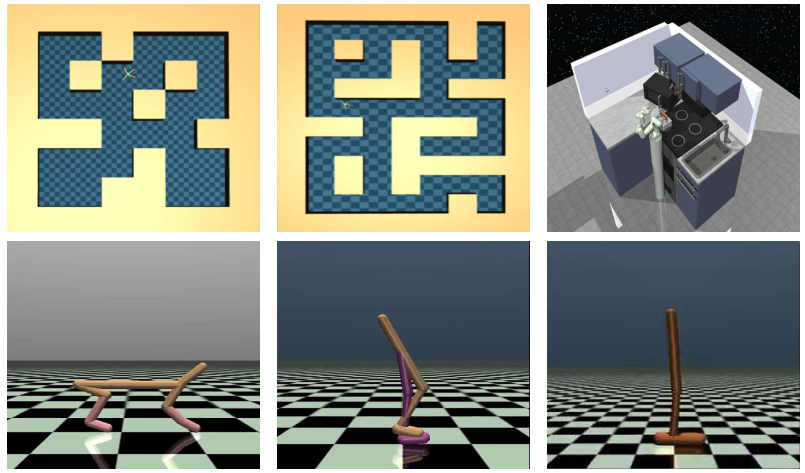
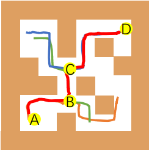
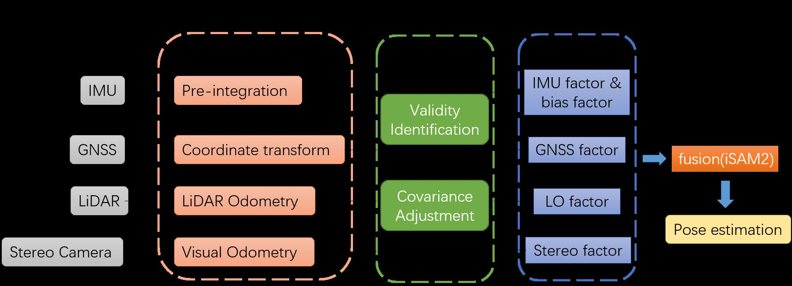

|
Xudong Yu
I am a PhD student at the School of Astronautics, Harbin Institute of Technology.
I received my Bachelor’s degree and Master’s degree from HIT. I’m now doing research about causal reinforcement learning, focusing on combining causal inference and reinforcement learning to overcome the data efficiency and generalization problem. Before that, my research is mainly about Navigation and Localization for Unmanned Systems with factor graph optimization. In particular, I care about the extreme situations like GNSS-denied or visually-degraded environments.
Email /
CV /
Bio /
Google Scholar /
Zhihu /
Github
|
|
|
Research
I'm interested in offline reinforcement learning, model-based reinforcement learning, causal inference.
|
|

|
Hindsight Self-Supervision for Offline Reinforcement Learning.
Xudong Yu, Chenjia Bai, Changhong Wang, Zhen Wang
Under Review
|
|

|
Curriculum Goal-conditioned Self-imitation for Offline Reinforcement Learning
Xiaoyun Feng*, Li Jiang*, Xudong Yu,
Haoran Xu, Xiaoyan Sun, Jie Wang, Xianyuan Zhan, Wai Kin (Victor) Chan
Under review, 2022 (* Equal Contribution)
We consider offline reinforcement learning using goal-conditioned self-imitation with curriculum leanring.
|
|

|
Multi-Sensor Fusion Localization with Factor Graphs for UGVs Under Adverse Conditions
Xudong Yu, Changhong Wang
IEEE International Conference on Unmanned Systems (ICUS), 2021
paper
We propose a multi-sensor fusion localization method for UGVs under adverse conditions.
|
|
{kind=link}